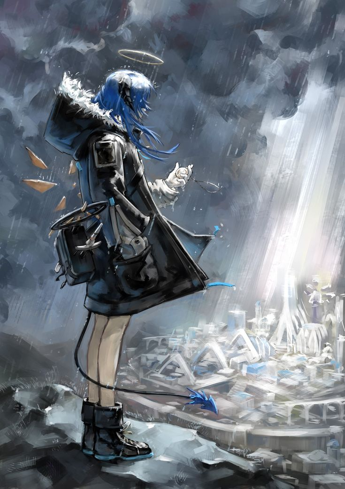
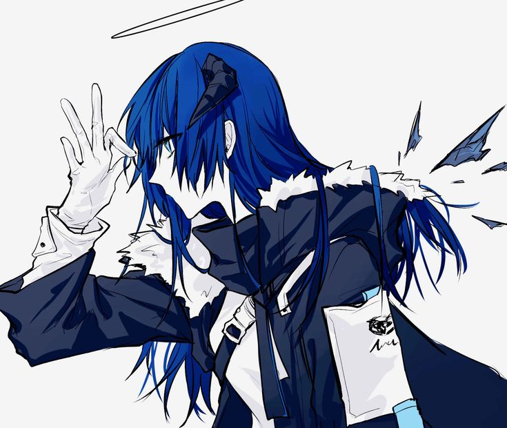

Desmontando sistemas,construindo defesas.
Segurança ofensiva, pentesting e ferramentas próprias. Aprendo desmontando o que os outros confiam que vai funcionar.
Uma mente orientada a sistemas.
Estudante de segurança ofensiva em formação contínua. Sem certificação formal por enquanto — só projetos reais, ferramentas que escrevi do zero e a teimosia de entender como as coisas quebram.
Construo o portfólio enquanto aprendo: de scanners de rede a um SIEM local, tudo funcional e documentado. A melhor forma de defender é pensar como quem ataca.
Foco em bug bounty, pentest e segurança ofensiva como caminho profissional — explorando o mercado brasileiro de cyber com calma e estratégia de longo prazo.

Onde estou me aprimorando.
OSINT, enumeração de alvos e footprinting ativo/passivo com nmap, gobuster e scapy.
SQLi com sqlmap, XSS refletido e armazenado, interceptação e fuzzing com Burp Suite.
Automação em Python, TUIs com rich/curses e wrappers próprios de ferramentas de pentest.
Modelo OSI, TCP/UDP, DNS, manipulação de pacotes com hping3/scapy e análise de tráfego.
Arch / CachyOS no dia a dia, hardening, systemd, tuning de kernel e automação de ambiente.
SIEM local em Python, detecção de padrões em logs e análise de eventos no próprio lab.
Coisas que eu construí.
Painel de pentest modular no terminal. Integra nmap, sqlmap, nikto e hydra num TUI com box-drawing e navegação por teclado.
Laboratório com webapp Flask deliberadamente vulnerável + monitor SIEM em terminal. Aprendo detectando ataques no meu próprio ambiente controlado.
Toolkit de reconhecimento de rede no terminal. Wrapper de hping3 e scapy para teste de protocolos, com output formatado e navegação interativa.
App de estudo desktop desenhado em torno do meu jeito de aprender. Recebe PDF, YouTube e áudio, processa com IA e organiza notas num vault Obsidian com mapa de conhecimento.
Vamos quebrar algo
— de forma responsável.
Aberto a bug bounty, projetos de segurança e qualquer coisa que envolva entender sistemas a fundo.
Mandar mensagem no Discord